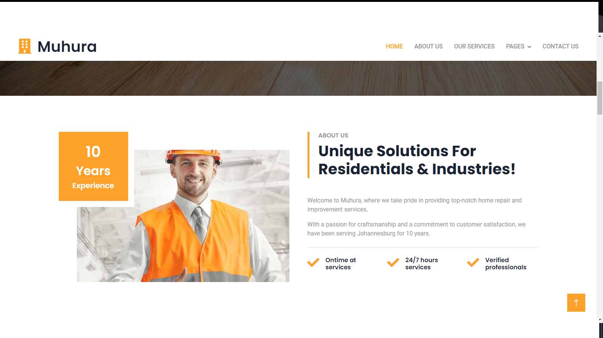

I am a dedicated Level 5 System Development student with a passion for computer skills and software development. I'm focused on mastering computer repair, network installation, C# .NET, Java, SQL, HTML, CSS, and JavaScript. My goal is to leverage these skills to create innovative and efficient systems that make a significant impact in the tech world.
My Skills
My Expertise
Web Development
Developed dynamic web applications using ASP.NET Core and integrated SQL databases for seamless data management.
Database Management
Designed comprehensive database schemas and managed data migration tasks to ensure optimal performance and data integrity across systems.
Software Development
Built user-friendly desktop applications with C# and Windows Forms, and mobile apps with Java and Android Studio, showcasing robust functionality and performance.
Graphic Design
Skilled in creating visually engaging designs using Adobe Creative Suite (Photoshop, Illustrator, InDesign). Adept at blending aesthetics with functionality to enhance user interfaces and experiences.
Hardware Knowledge
Experienced in computer assembly, disassembly, and hardware troubleshooting. Knowledgeable about different computer components and peripherals.
Networking
Proficient in network setup and configuration, troubleshooting network issues, and understanding network protocols and devices.
Security
Basic understanding of cybersecurity principles, antivirus and malware protection, and safe browsing practices.
Programming
Knowledge of programming languages such as Java, c#, and JavaScript, as well as scripting for automation and debugging.
Database Management
Proficient in basic SQL queries, database management, and understanding database structures and relationships.
Command Line Proficiency
Experienced in basic command line operations for Windows, macOS, and Linux, as well as scripting and automation using command line tools.
Technical Support
Strong customer service skills for technical support roles and the ability to communicate technical information to non-technical users.
System Administration
Experienced in managing user accounts and permissions, system monitoring and maintenance, and backup and recovery procedures.
About
About Me
I am Ndou Gundo, a committed Level 5 System Development student with a strong passion for software development. I am focused on mastering C# .NET, Java, SQL, HTML, CSS, and JavaScript to contribute significantly to the tech world.
Technical Skills C# and .NET Framework
Expertise: Windows applications, ASP.NET web apps, enterprise software.
Experience: Built desktop apps (Windows Forms, WPF), robust APIs (ASP.NET Core), and scalable web solutions.
Java
Expertise: Cross-platform applications, backend development, mobile apps.
Experience: Developed web apps (Spring Boot), Android apps (Android Studio), and server-side logic for large systems.
SQL
Expertise: Relational database management, performance optimization.
Experience: Designed schemas, wrote complex queries, and worked with MySQL, PostgreSQL, SQL Server.
HTML, CSS, JavaScript
Expertise: Responsive, interactive web pages.
Experience: Built personal portfolios, developed responsive designs, enhanced UIs with React and Angular.
Project Experience Web Development
Personal Portfolio: Showcased projects using HTML, CSS, and JavaScript.
Dynamic Web App: Created with ASP.NET Core, integrated SQL databases.
Database Management
Comprehensive Schema: Designed for a small business app, optimized for performance.
Data Migration: Managed migration tasks ensuring data integrity.
Software Development
Desktop Application: Developed with C# and Windows Forms.
Mobile Application: Built with Android Studio, Java, and SQLite.
Professional Goals
Continuous Learning: Stay updated with tech advancements.
Innovation: Develop solutions addressing real-world problems.
Collaboration: Work with teams to tackle challenges and achieve goals.
As a Level 5 System Software Developer, I am dedicated to mastering a range of technologies to build impactful software solutions. My journey involves continuous learning, practical experience, and a passion for innovation, aiming to make significant contributions to the tech world.
Recent Projects
My Portfolio

Web Development
I created this responsive website using HTML, CSS, and JavaScript and bootstrapmade